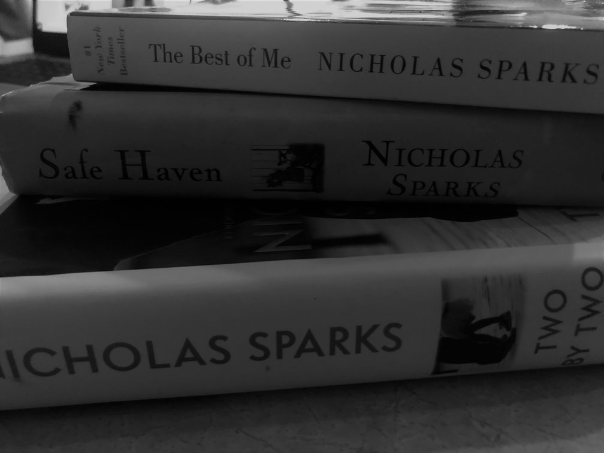

PLAYING GUITAR
I'v been playing guitar for about 10 years now. when ever i get a free time, i always pick up my YMAHA and start playing.
sound of the strings fills my souls. I enjoy every single miniute of playing the guitar.
READING NOVELS
I love reading anything I could find or see.
more than anything, I love ro read Nicholas Sparks' books. It's safe to say that, I have read all of his books.
WRITTING PORMS AND JOURNALS
Another hobby of mine is writting. Ever since I remember, I enjoyed writting poems, or any thought that comes to my mind.
In my late 20's I started to write journals, one of the journals im working on right now called "Desire Of The Soul". It's more of a book and im planning to get in published as soon as I'm done.